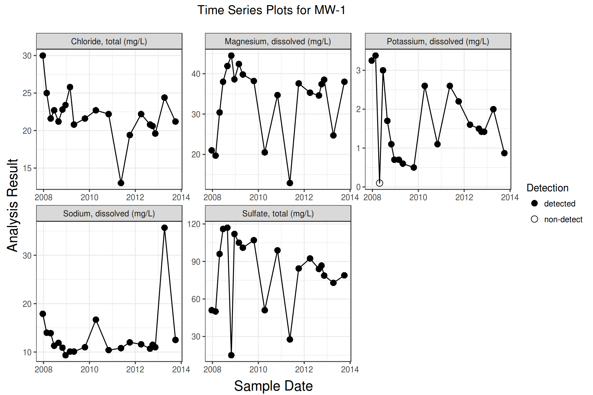
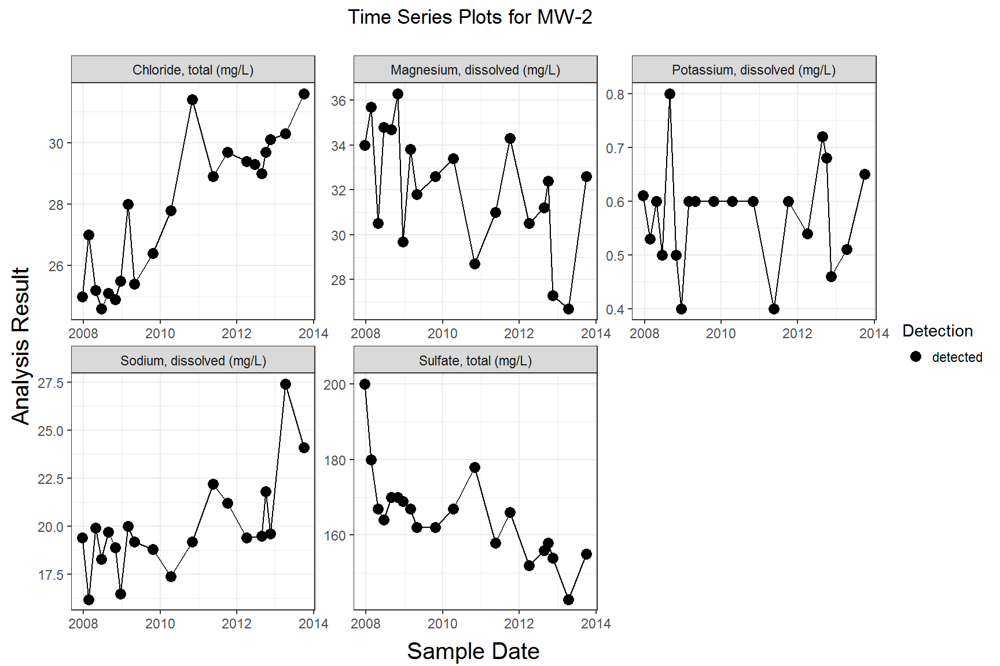
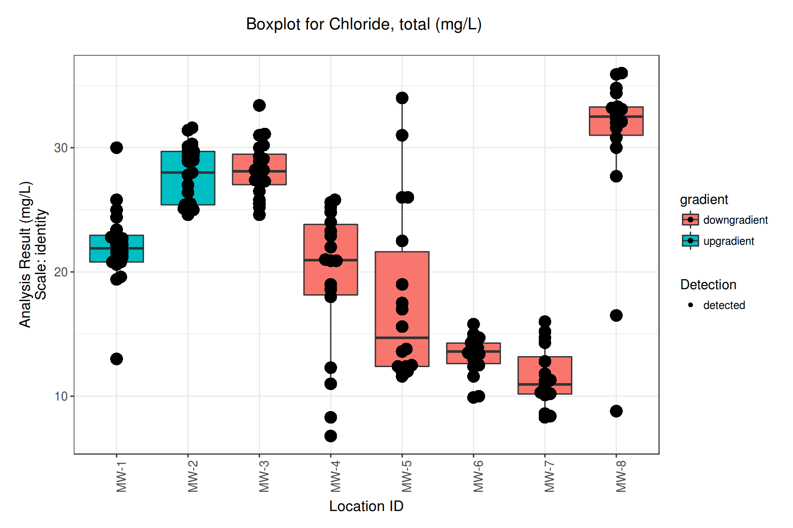
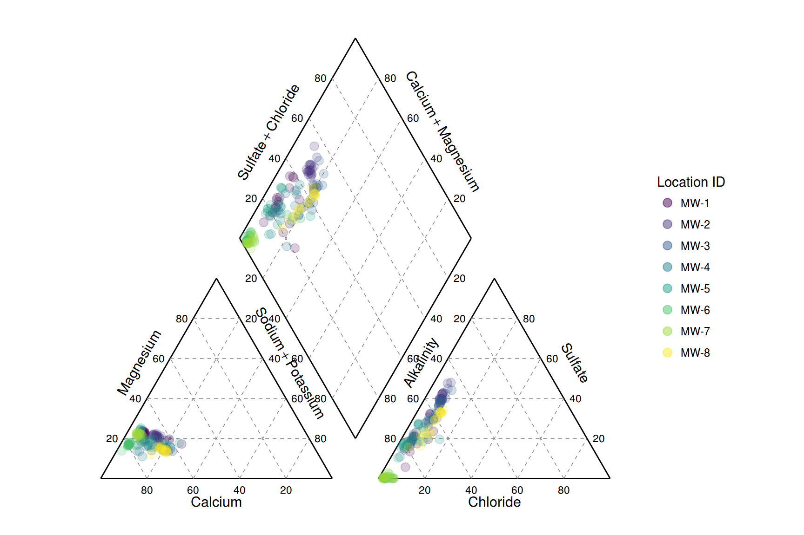

Overview
The goal of manager is to provide a set of tools to simplify plotting and analyzing environmental data that is in a tidy format. Manager also provides functions to read data from external sources such as MANAGES and gINT.
Example
library(manager)
# reading data from external sources
data <- read_manages3("C:/path/to/Site.mdb")# load example data and plot time series of selected wells and constituents
data("gw_data")
wells <- c("MW-1", "MW-2")
params <- c("Magnesium, dissolved",
"Sodium, dissolved",
"Chloride, total",
"Sulfate, total",
"Potassium, dissolved")
gw_data %>%
filter(location_id %in% wells, param_name %in% params) %>%
ts_plot(., facet_var = "param_name", group_var = "location_id")
# create boxplots filled by gradient
gw_data %>%
filter(param_name == "Chloride, total",
location_id %in% c("MW-1", "MW-2", "MW-3", "MW-4", "MW-5", "MW-6", "MW-7", "MW-8")) %>%
mutate(gradient = if_else(location_id %in% wells, "upgradient", "downgradient")) %>%
boxplot(., fill = "gradient")
Create Piper plots…
gw_data %>%
piper_plot()
Installation
To install the manager package you must first make sure you have a working development environment.
-
Windows: Install Rtools.
-
Mac: Install Xcode from the Mac App Store.
- Linux: Install a compiler and various development libraries (details vary across differnet flavors of Linux).
Then, install the devtools package from CRAN with
install.packages("devtools")After you have devtools installed you can install manager using the command
devtools::install_github("jentjr/manager")Eventually, the package might be submitted to CRAN, but until then you’ll have to install with devtools.
Shiny App
A shiny app is included with the package. It can be launched locally by running manager::manager(), or you can browse to the shinyapps.io website for manager. In order to read a MANAGES, or gINT database you must be running a local server with RODBC installed. R must either be in 32-bit, or 64-bit mode depending on which drivers are installed for microsoft access. MANAGER has only been tested in 32-bit mode.